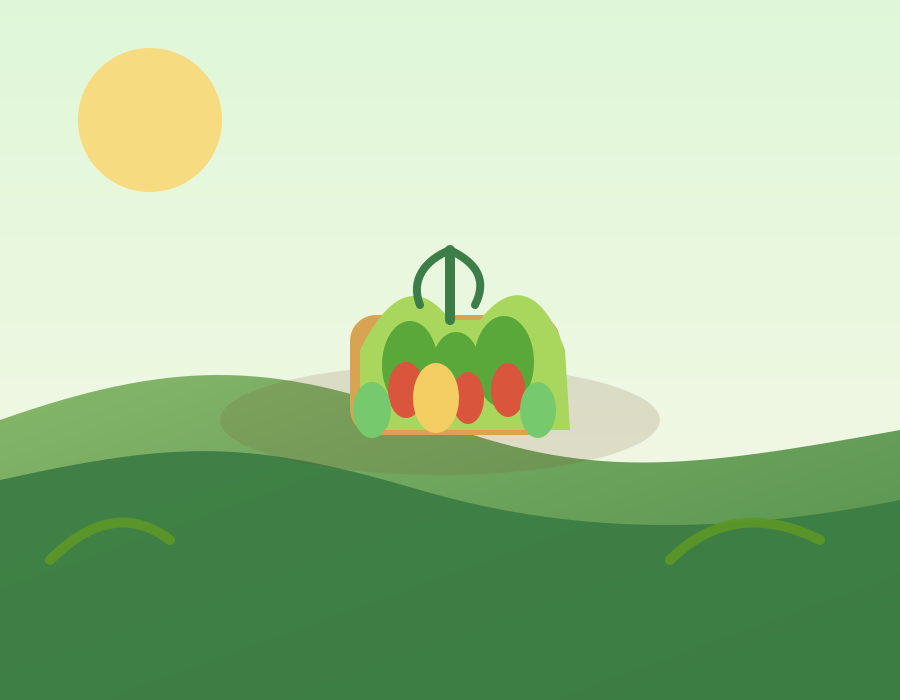

.jpg)

Potatoes & Carrots
Freshly grown potatoes, carrots, and root vegetables packed with flavor and nutrition.
Fresh from the farmFresh from the soil • Healthy livestock • Honest farming
We grow potatoes, carrots, all kinds of vegetables, peas, and support the farm with quality livestock products that bring nourishment, flavor, and trust to every home we serve.

Why choose us
At Churu's Farm, we grow potatoes, carrots, all types of vegetables, peas, and a range of livestock products that support a complete and natural family food supply. Every harvest and every product is raised with care, cleanliness, and respect for our land.
From the field to the household, we provide fresh, useful farm products that nourish families and keep food honest and dependable.
Fresh potatoes, carrots, and other nourishing vegetables grown for daily meals.
From leafy greens to peas and seasonal staples, we grow a wide range of produce.
We also provide reliable livestock-based goods such as milk, eggs, and animal produce.
Our harvest
Freshly grown potatoes, carrots, and root vegetables packed with flavor and nutrition.
Fresh from the farm
All types of vegetables and quality peas cultivated for healthy cooking and family meals.
Seasonal supply
Reliable animal produce including milk, eggs, and other farm goods from healthy livestock.
Farm-raised careFair pricing
Farm gallery


Our promise
Testimonials
“The vegetables are incredible. You can taste the care in every bite and they stay fresh for days.”
“Their seasonal box feels like a little celebration every week. It has changed the way our family eats.”
“Professional, friendly, and always fresh. The fruit is sweet and the herbs smell amazing.”
Let’s grow together
Tell us what produce or livestock products you need and we’ll help you choose the right order for your household, kitchen, or farm supply needs.